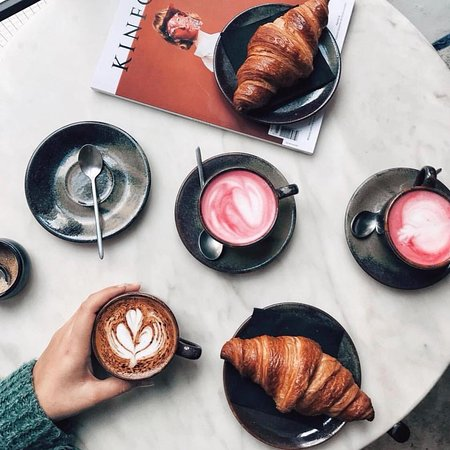
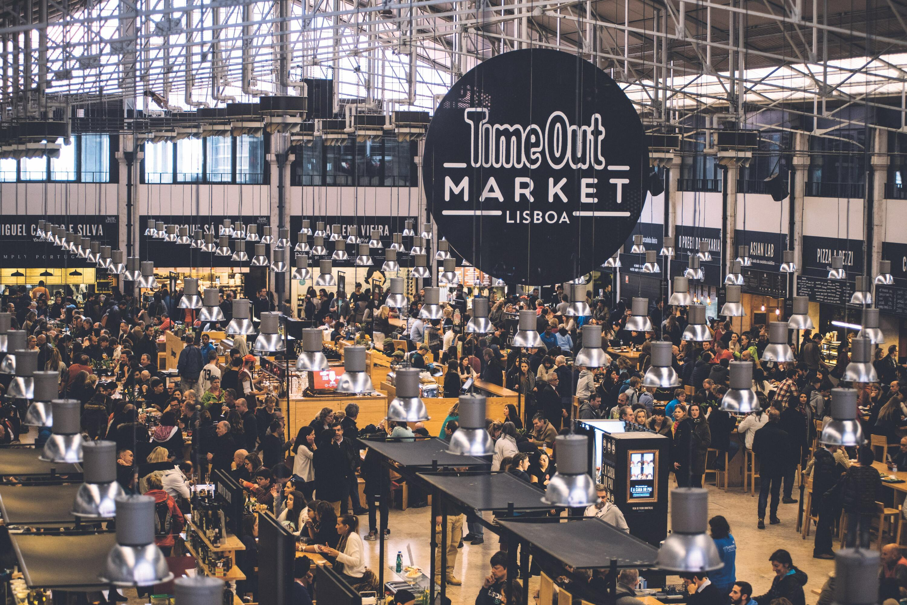

Lissabon zit vol met gezellige eet- en drinkgelegenheden. Van chique restaurants met versgevangen vis tot
lokale koffietentjes waar je de welbekende 'Pastel de Nata' kan eten, voor ieder wat wils.
Ik heb deze pagina daarom ook onder verdeeld in 4 delen waarbij ik per onderdeel mijn favoriete tent met jullie deel:
- Ontbijt
- Lunch
- Diner
- Cafés
Ontbijt
Dear Breakfast
Een zeer populaire brunchgelegenheid gelegen in het centrum van Lissabon, je kunt hier van alles krijgen en alles is vers gemaakt. Waar Dear Breakfast vooral bekend om staat is hun roze cappucino, dit is dan ook geliefd onder de instagrammes.
Lunch
Time Out Market
Dit is een grote indoor markthal aan de waterkant vlabij het centrum van Lissabon, dit is een zeer populaire attractie onder de touristen maar ook onder de locals. Je kunt hier echt alles halen wat je maar kunt bedenken als het gaat om eten. Burgers, sushi, visgerechten, gegrilde groentes, noem maar op.
Ik ging hier eerst alleen heen omdat het een erg populaire attractie is in Lissabon die je niet gemist kan hebben.
Ik was alleen van plan om één enkele keer langs te gaan om even rond te kijken, al gauw stond ik versteld van de geur
en alle lekkere hapjes om mij heen. Ik besloot een burger te halen met sweet potato fries en een bananen milkshake, dit was een van de lekkerste
burgers die ik ooit had gegeten en kon me er niet van weerhouden om de volgende dag terug te gaan.
De volgende dag besloot ik om ook nog wat hapjes te testen bij de andere kraampjes, ik ging voor verse vis en calamares.
Ook dit was weer een succes en ik heb van allerlei verschillende mensen alleen maar positieve verhalen gehoord over de TimeOut Market.
Zeker een aanrader dus!